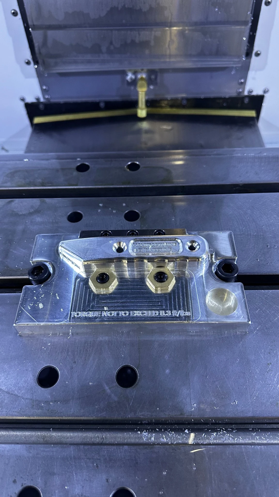
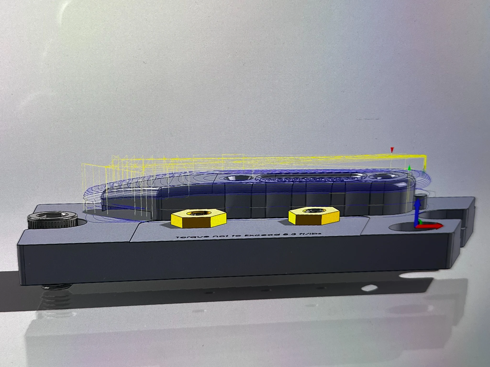

IME 450 / FIXTURE DESIGN LAB · SPRING 2026
Utility Blade
CNC Fixture.
A quick-change workholding fixture designed for a Haas EC-400 horizontal CNC mill and flexible manufacturing system.

01 / Finished utility blade fixture mounted in the CNC machine.
The goal was to design, manufacture, and test a fixture that could locate and securely hold either of two utility-blade-handle halves for their second CNC milling operation.
The two handle sides needed to use the same fixture location, one at a time, while leaving the necessary surfaces accessible for three-axis roughing and surfacing. The fixture also had to mount to a tombstone in a Haas EC-400 pallet-pool system.
The project connected workholding design to practical shop-floor requirements: locating on qualified datums, resisting milling forces, and making part loading straightforward.
Part load and unload time target
Minimum clamping-force safety factor
One finished part per loading cycle
Maximum fixture base dimensions
Additional requirements: locate from qualified Op 1 datums, indicate the fixture to machine axes, and allow operation of both handle sides without simultaneous loading.
03 / DEVELOPMENT
From CAD
to cutting metal.
Plan the workholding. Account for qualified locating datums, tool access, machine interface, and clamping loads.
Model and prepare. The class project specified SolidWorks and HSMWorks for fixture design and CAM.
Manufacture and test. Machine the fixture plate, mount the setup, and test its function on the Haas EC-400.


04 / PHYSICAL BUILD
Built for actual
machining.
The fixture progressed beyond a CAD assembly into a manufactured workholding setup. The photos document the machined fixture and its use in a CNC machining environment.
The course scope included machine testing and inspection. The next improvement to this case study is to add the team's measured changeover time, safety-factor calculation, and inspection results.
Explore other academic projects05 / TAKEAWAY
Design meets
manufacturing.
This project demonstrates the complete fixture-development workflow: translating manufacturing requirements into a physical, machinable workholding solution.
It's a good example of the engineering work I want to keep doing: bridging mechanical design, CNC machining, and shop-floor usability.
Project specifications are from the IME 450 assignment; photos document the build. Detailed measured test results have not yet been added to this portfolio.